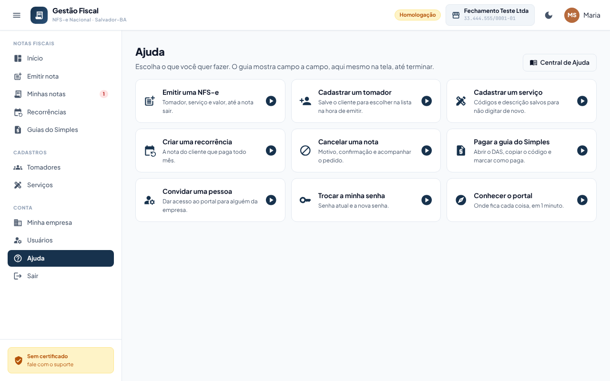
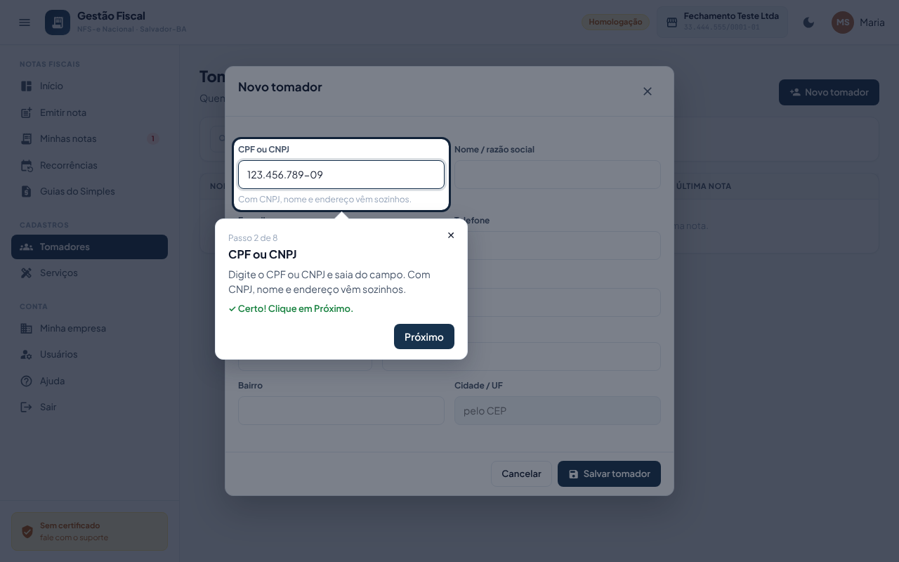
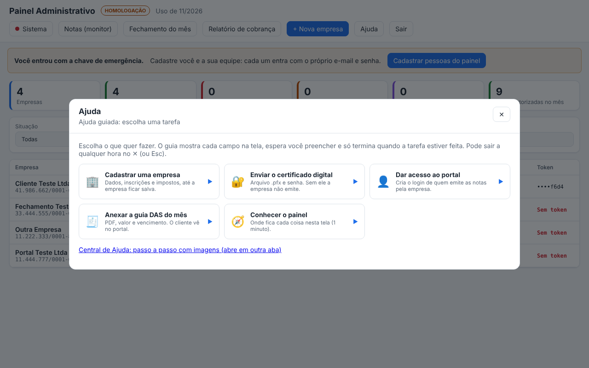

Ajuda guiada: faça a tarefa com o guia do lado
Você escolhe o que quer fazer e o guia leva campo a campo na própria tela. Você vai preenchendo e, no fim, a tarefa está feita: nota emitida, tomador salvo, guia paga.
-
Abra a Ajuda e escolha a tarefa
- Portal do cliente: no menu, clique em Ajuda (no celular, abra o menu ☰ primeiro). Na tela Emitir nota também tem o botão Me guie.
- Painel do administrador: no topo, clique em Ajuda.
Clique na tarefa. Portal: emitir nota, cadastrar tomador, cadastrar serviço, criar recorrência, cancelar nota, pagar a guia do Simples, convidar alguém, trocar a senha e conhecer o portal. Painel: cadastrar empresa, enviar certificado, dar acesso ao portal, anexar a guia DAS e conhecer o painel.

-
Preencha o campo destacado
O guia destaca um campo por vez e explica o que vai nele. Preencha e clique em Próximo (ou aperte Enter). Quando o campo está certo, aparece ✓ Certo!. Se faltar algo, o guia diz o quê.
Campo opcional tem o botão Pular. Quando o passo é clicar num botão (por exemplo, Salvar), clique nele: o guia segue sozinho.

-
No fim, a tarefa está feita
O último passo mostra o resultado: deu certo, ou o que corrigir (o campo com problema fica destacado). Corrija, clique de novo no botão de salvar e pronto.

Se der errado
| O que aconteceu | O que fazer |
|---|---|
| O botão Próximo não anda. | O campo destacado ainda não está certo. Leia a mensagem em vermelho na caixa do guia e corrija. |
| Não consigo clicar fora do destaque. | É de propósito: o guia deixa mexer só no campo da vez. Para sair, clique no ✕ ou aperte Esc. |
| Saí do guia no meio. | O que já foi preenchido continua na tela. Termine sozinho ou abra a Ajuda e comece o guia de novo. |
| Um passo aparece no meio da tela, sem destacar nada. | A tela ainda está carregando ou aquela parte não aparece para você. Espere um instante; a explicação continua valendo. |